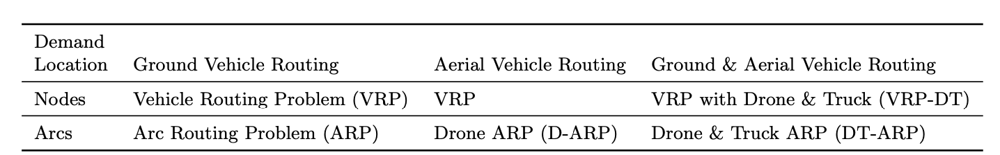
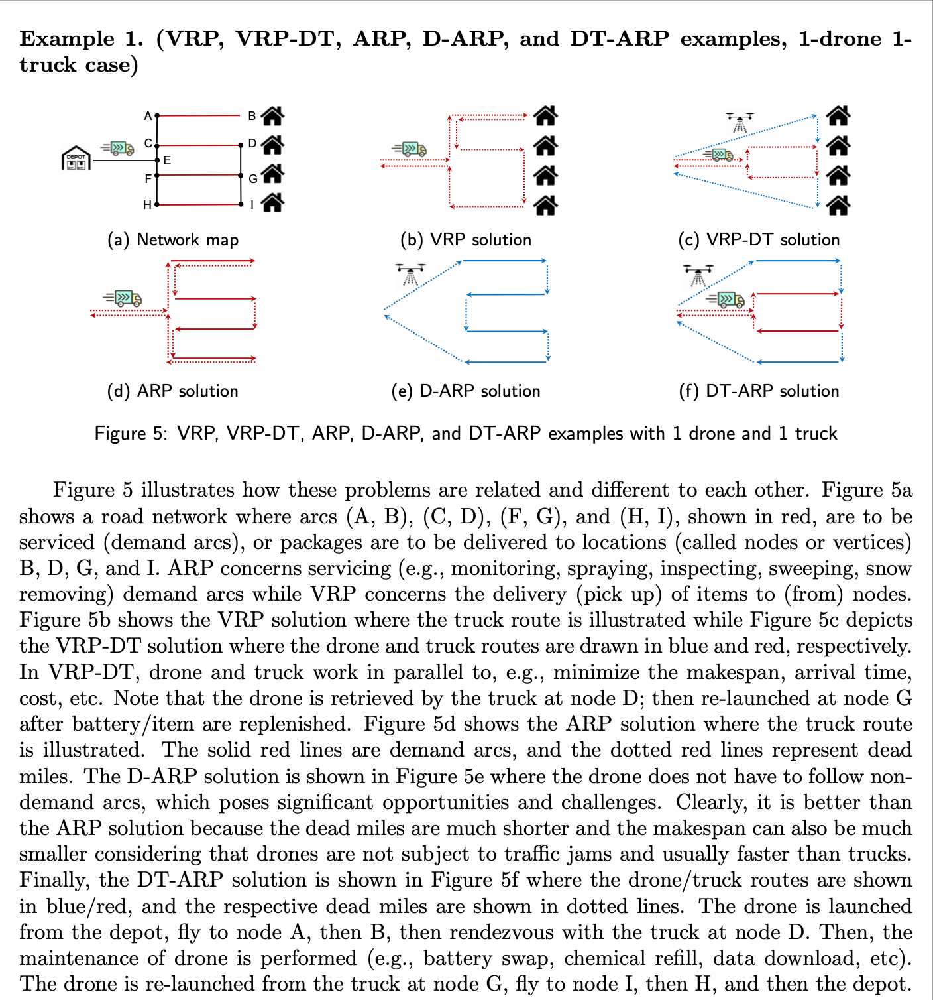
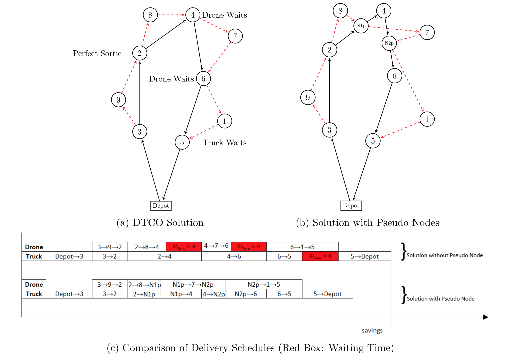
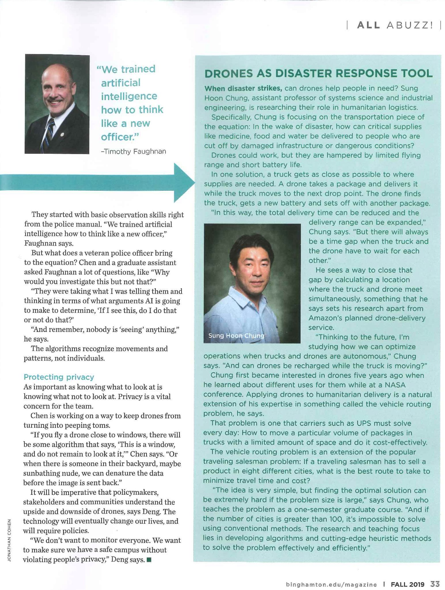
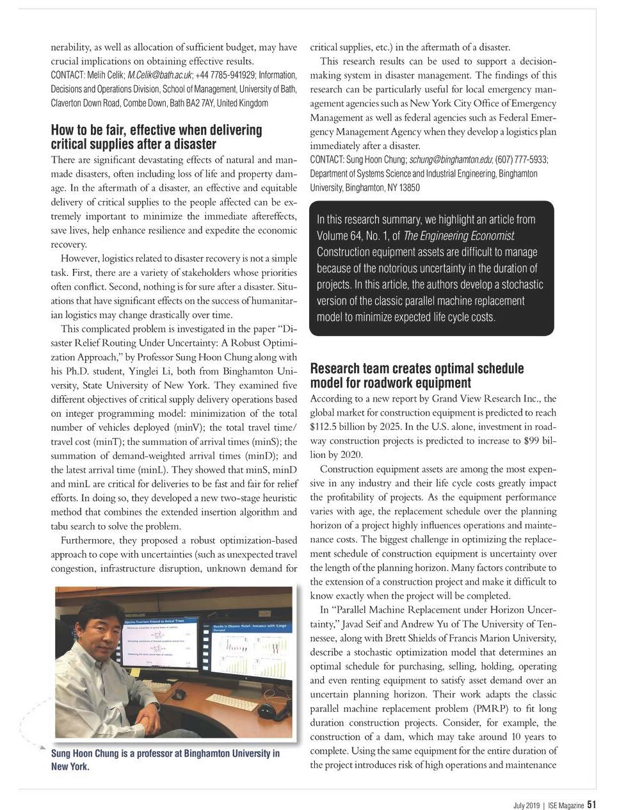

Sung Hoon Chung, Ph.D.
Assistant Professor
Department of Systems Science and Industrial Engineering
Binghamton University, the State University of New York
Contact
P.O. Box 6000
Binghamton, NY 13902-6000
Tel: +1-607-777-5933
Fax: +1-607-777-4094
Email: schung@binghamton.edu
Education
Ph.D., 2011, The Pennsylvania State University
M.S., 2001, Yonsei University
B.S., 1999, Yonsei University
Last Updated September 2021
Website created by Heyan Chung
Research Interests
My research focuses on mathematical optimization under uncertainty (robust optimization, data-driven optimization) for complex, large-scale problems (numerical optimization, large-scale optimization) where multiple agents compete against – and sometimes coordinate with – one another for limited resources over time (computational game theory, evolutionary game theory, dynamic optimization). Research domains include urban transporation/logistics, smart cities, supply chain management, hazards and disaster management, and healthcare operations management.
Drone-truck Combined Operations
Arc Routing Problems for Combined Drone-truck Fleets
This research contributes to national prosperity by advancing planning methods for combined drone/truck fleets to serve critical societal needs, such as energy transmission infrastructure monitoring, urban police patrolling, rural and suburban mail delivery, roadway pavement inspection, and traffic monitoring. Despite the significant opportunities offered by drones for remote operations, their limited flying time and small battery capacity hamper large-scale operations. Coordination between drones and roadway-dependent motor vehicles, such as trucks, can help resolve these issues by providing batteries and payload required for continued drone services. This project will provide a novel approach to cover large service areas using combined drone/truck fleets. This award highlights the societal applications characterized by combined ‘arc’ routing, for which existing routing methods
cannot provide adequate decision-making tools. In particular, this project will validate the methods developed through a case study involving surveillance of electric power transmission lines, the backbone of the nation’s energy infrastructure. This project will train the future workforce in computational operations research and develop open-source software packages to support the further use of unmanned vehicles.
The project will advance our understanding of arc routing problems in combined drone/truck fleets by developing computational optimization models and algorithms. The combined drone/truck arc routing problem is fundamentally different and significantly more challenging than traditional arc routing problems because drones can fly directly from one point to another point in the network without following ground arcs. In addition, a drone may serve only part of an arc due to its limited capacity and footprint, or potentially multiple distinct routes covering the entire arc. The optimal routing of mobile hubs served by trucks must also be incorporated into this already challenging problem. Furthermore, a drone may
launch from one truck and return to another truck if beneficial; therefore, synchronization between drones and trucks plays a significant role. This project will provide a novel mixed-integer linear programming formulation and adaptive heuristics based on decomposition, dynamic programming, partitioning, large neighborhood search, and machine learning for efficient operations of the combined fleets. The models and algorithms will be validated with actual data from power transmission line monitoring.
Types of mixed fleet problems

Examples

Pseudo Node Insertion Method
The advantage of a drone-truck mixed fleet operations in last-mile logistics can be summarized in two folds: 1) enabling faster pick-up/delivery of items and 2) expanding operation areas beyond the range that could be achieved by using only one type of vehicle. The drone-truck combined operation (DTCO) solutions are based on truck routes and locations, usually customer nodes, where drones depart from and return to trucks. Since synchronous rendezvous of both vehicles can be very rare, these solutions may contain waste time caused by waiting of one vehicle for the other. In this research, a pseudo node insertion method is proposed to make DTCO more efficient by resolving the drone-truck asynchronization issue. Pseudo nodes are created at the point where a drone and a truck can meet simultaneously. We present a detailed method to calculate the location of the pseudo node, and provide a detailed analysis for the travel completion time saving conditions. Furthermore, we explore a variety of scenarios to enhance the efficiency of DTCO by way of inserting pseudo nodes. An algorithm for the pseudo node insertion method is provided, and numerical examples are presented to discuss efficacy and efficiency of our proposed approach.

In the above figure, the DTCO solution is shown in (a), which can be improved by way of inserting pseudo nodes as shown in (b). The travel completion time is analyzed in (c) for both problems, where the red boxes show the waiting time. It is clear that the travel completion time is effectively reduced if the pseudo nodes are used.
Survey of Optimization Methods for Drone-truck Combined Operations
We survey the state-of-the-art optimization approaches in the civil application of drone operations (DO) and drone-truck combined operations (DTCO) including construction/infrastructure, agriculture, transportation/logistics, security/disaster management, entertainment/media, etc. In particular,
we review ongoing research on various optimization issues related to DO and DTCO including mathematical models, solution methods, synchronization between a drone and a truck, and barriers in implementing DO and DTCO. First, we introduce DO and DTCO and their applications,
and explore some previous works including survey papers. In addition, we survey the state of the art of DO and DTCO studies and discuss the research gaps in the literature. Furthermore, the detailed review of DTCO models and solution methods are reviewed. Finally, future research directions are discussed. All the reviewed papers are summarized in an Excel file, which can be downloaded here.
Research Grants
- (Lead-PI, 54%) Collaborative Research: Arc Routing Problems in Combined Drone/Truck Fleets, funded by National Science Foundation, 7/2021-6/2024
- (PI, 100%) Using drones to disinfect urban streets and protect the most vulnerable population from the spread of COVID-19, funded by SUNY RF, 4/2020-12/2020
- (PI, 100%) Systematic and Integrated Framework for Advancing the Management of Dynamic, Complex, and Interdependent Systems, funded by Material Handling Institute, 2/2018-12/2019
- (PI, 50%) Investigating the Potential of Dynamic Wireless Charging Techniques for Continuous Electric Forklift Operations, funded by Toyota Material Handling North America University Research Program, 1/2017-1/2018
- (Co-PI, 50%) Studying Lift Truck Driver Behavior and Warehouse Congestion Using Informatics and Analytics Methods, funded by Toyota Material Handling North America University Research Program, 1/2017-1/2018
- (Co-PI, 50%) Re-Engineering of Operations at Laufer Group International, funded by Laufer Group International, 10/2016-09/2017
- (PI, 100%) Adaptive Vehicle Routing for Evacuation under Uncertainty, funded by U.S. Department of Transportation through University Tranportation Research Center, 09/2016-12/2017
- (PI, 100%) Disaster Relief Routing under Uncertainty, funded by U.S. Department of Transportation through University Tranportation Research Center, 05/2015-12/2016
- (Co-PI, 50%) Warehouse Modeling, Operations Management, and Analytics, funded by Bennett Distribution Services, 06/2015-05/2018
- (Co-PI, 50%) Research in RMA Process Setup, funded by Google, 11/2014-12/2015
Last Updated September 2021
Teaching
Current Courses
- ISE 421, Modeling and Simulation, Fall 2021
- SSIE 660, Stochastic Systems, Fall 2021
Courses Taught
- Simulation Modeling and Analysis
- Applied Probability and Statistics
- Applied Stochastic Processes
- Computational Sustainability
- Linear Programming
- Operations Research: Deterministic Methods
- Statistical Methods in IE
Last Updated June 2021
Computational Operations Research & Engineering (CORE) Laboratory
The CORE laboratory in the department of Systems Science and Industrial Engineering at Binghamton University, the State University of New York, is located in EB J0.
Research Domains
- Urban transportation/logistics
- Smart cities
- Supply chain management
- Hazards and disaster management
- Healthcare operations management
Quantative and Analytical Tools
- Mathematical optimization
- Simulation
- Statistical Learning
- Game Theory
- Decision Analysis
People
Current Members
- Dr. Sung Hoon Chung, Principal Investigator
- Antoine Stewart, Ph.D. Student
- Emad Alenany, Ph.D. Student
- Joseph Chery, Ph.D. Student
- Shadi Al-B'Ool, Ph.D. Student
Alumni
Ph.D.
- Mohammed Al-Mashraie, Ph.D., 2021, Now Senior Innovation Specialist, Albany Medical Center
- Bhawesh Sah, Ph.D., 2019, Now Visiting Assistant Professor at Northeastern University
- Yinglei Li, Ph.D., 2018, Now Senior Data Scientist at Breakthrough Fuel LLC
MS
- Runzhuo Chi, MS, 2020
- Sachin Vohra, MS, 2020
- Ryan Maloney, MS, 2020
- Yingzheng Liu, MS, 2019
- Saraswathi Hathikal, MS, 2018
- Ingyu Lee, MS, 2017
- Abel Portorreal, BS, 2017
- Yue Zhang, MS, 2017
- Vinay Ghandi, MS, 2017
- Namrata Shetty, MS, 2017
- Harikrishnan Rajkimar, MS, 2016
- Sandesh Bharre, MS, 2016
- Sara Kohtz, BS, 2015; MS, 2016
- Kevin Calvi, MS, 2015
News
- Dr. Chung receives a research grant from National Science Foundation, June 2021
[Collaborative Research: Arc Routing Problems in Combined Drone/Truck Fleets]
- Joseph Chery, a Ph.D. student, joins the CORE lab, Jan, 2021
- Shadi Al-B'Ool, a Ph.D. student, joins the CORE lab, Nov 2020
- Emad Alenany, a Ph.D. student, joins the CORE lab, Oct, 2020
- Antoine Stewart, a Ph.D. student, joins the CORE lab, April, 2020
- Dr. Chung receives a research grant from SUNY RF, April, 2020
- Two master students, Sachin Vohra and Ryan Maloney, join the CORE lab, February, 2020
- Runzhuo Chi, a master student, joins the CORE lab, December, 2019
- Linh Nguyen, an undergraduate student, joins the CORE lab, September, 2019
- Dr. Sah will join Northeastern University as a Visiting Assitant Professor, Congratulations, July 2019
- Bhawesh Sah successfully defended his Ph.D. dissertation, May 2019
- Dr. Chung receives an Individual Development Award, February 2019
- Dr. Li will join Breakthrough Fuel as a Senior Data Scientist, Congratulations, January 2019
- Yinglei Li successfully defended her Ph.D. dissertation, December 2018
- Dr. Chung receives a research grant from MHI, February 2018
- Dr. Chung receives research grants from Toyota Material Handling North America, January 2017
[News: Inaugural Toyota Material Handling North America University Research Program Funds Top Research]
- Two master students, Ingyu Lee and Saraswathi Hathikal, join the CORE laboratory, January 2017
- Dr. Chung receives a research grant from Laufer Group International, October 2016
- Eman Banimustafa, a master student, joins the CORE laboratory, October 2016
- Farouq Halawa, a Ph.D. student, joins the CORE laboratory, September 2016
- Three master students, Yue Zhang, Rajat Dhiman, and Vinay Ghandi, join the CORE laboratory, September 2016
- Dr. Chung receives a research grant from U.S. Department of Transportation, August 2016
- Abel Portorreal, an undergraduate student, joins the CORE laboratory as a McNair scholar, May 2016
- Namrata Shetty, a master student, joins the CORE laboratory, April 2016
- The research team (Sara Kohtz, Prof. Chung, Yinglei Li, and Neha Sawant) receives the Best Track Paper Award at the ISERC 2016, April 2016
- Yinglei Li receives the Best Student Paper Award at the ISERC 2016, April 2016
- Professor Chung receives an Individual Development Award, January 2016
- Sara Kohtz, an undergraduate student, joins the CORE laboratory, September 2015
- Professor Chung receives a research grant from U.S. Department of Transportation through University Transportation Research Center (UTRC), April 2015
- Yinglei Li receives a Sustainable Communities TAE Graduate Student Research Grant, March 2015
- Professor Chung receives an Individual Development Award, January 2015
- Yinglei Li, a Ph.D. student, joins the CORE laboratory, January 2015
Current Projects
Completed Projects
- Systematic and Integrated Framework for Advancing the Management of Dynamic, Complex, and Interdependent Systems, funded by Material Handling Institute
- Investigating the Potential of Dynamic Wireless Charging Techniques for Continuous Electric Forklift Operations, funded by Toyota Material Handling North America
- Studying Lift Truck Driver Behavior and Warehouse Congestion Using Informatics and Analytics Methods, funded by Toyota Material Handling North America
- Re-Engineering of Operations at Laufer Group International, funded by Laufer Group International
- Adaptive Vehicle Routing for Evacuation under Uncertainty, funded by U.S. Department of Transportation through UTRC
- Warehouse Modeling, Operations Management, and Analytics, funded by Bennett Distribution Services
- Disaster Relief Vehicle Routing under Uncertainty, funded by U.S. Department of Transportation through University Transportation Research Center (URTC)
- Functional Job Analysis of Anticoagulation Clinic Staff, funded by New England Veterans Engineering Resource Center (VERC)
- Research in RMA Process Setup, funded by Google
Sponsors

In the Media
- The CORE lab's research is featured in BU Magazine, September 2019

- The CORE research team's research is featured in ISE Magazine, July 2019

- The CORE lab is featured in PR Newswire.
Last Updated June 2021